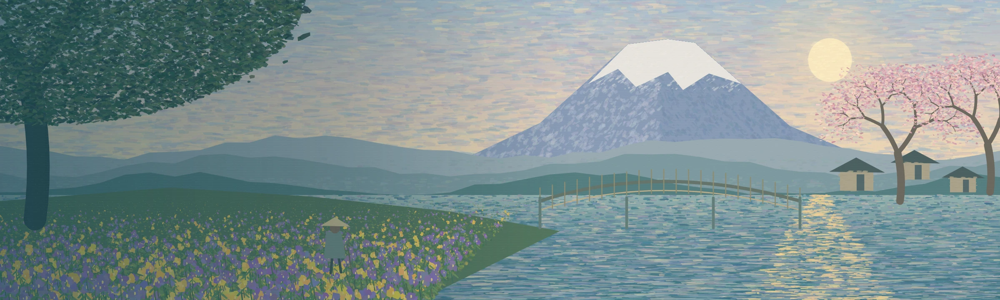
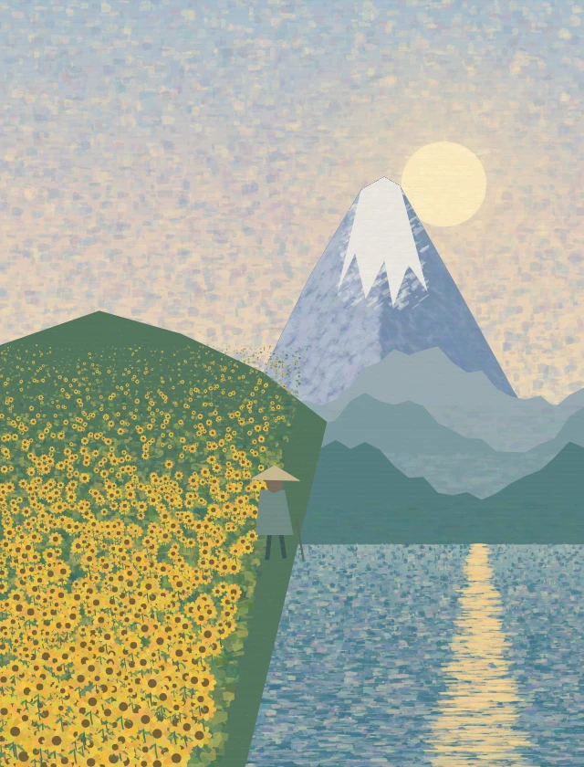
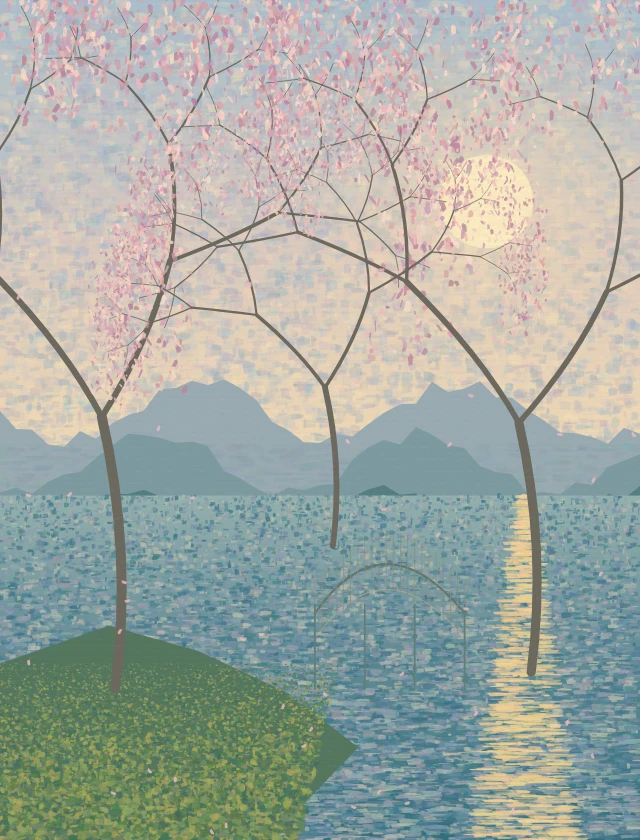
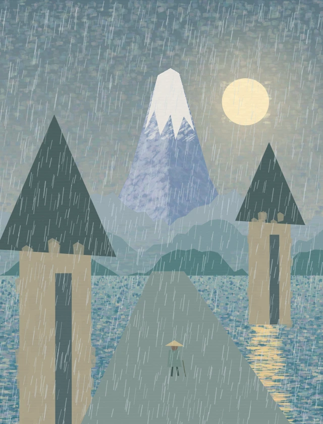
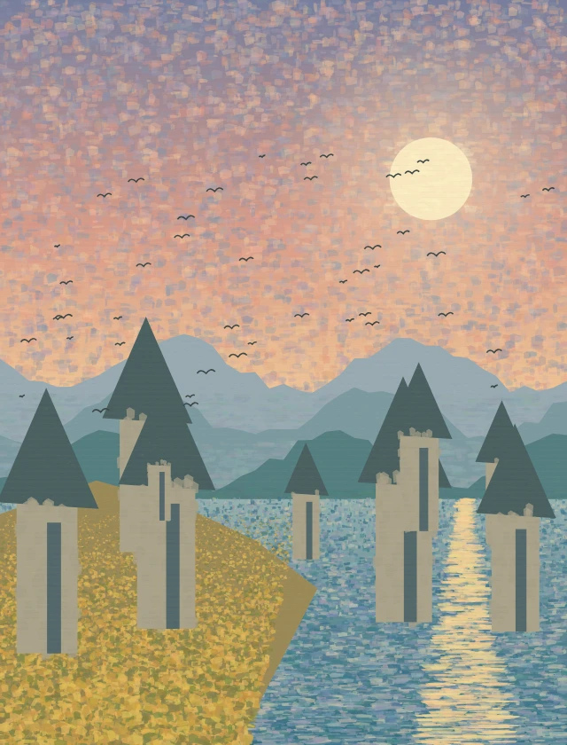
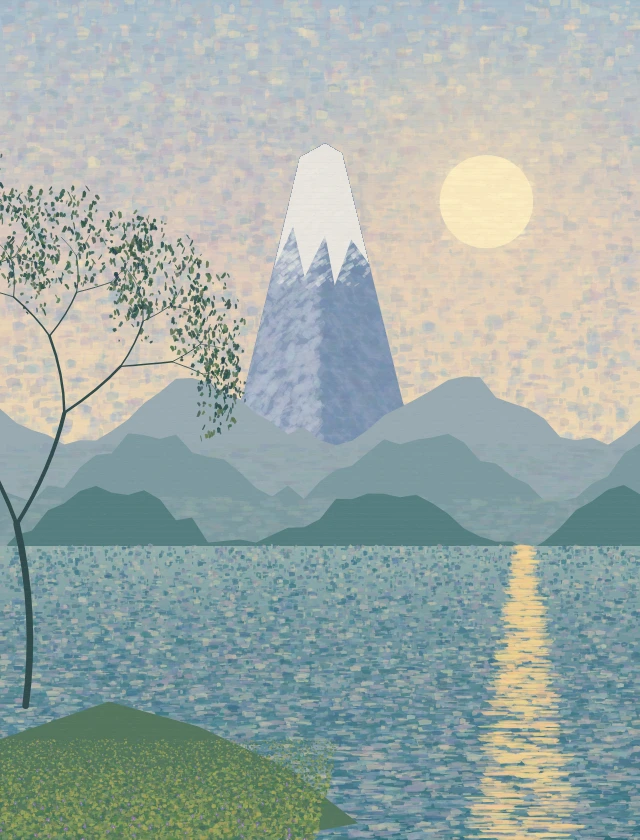
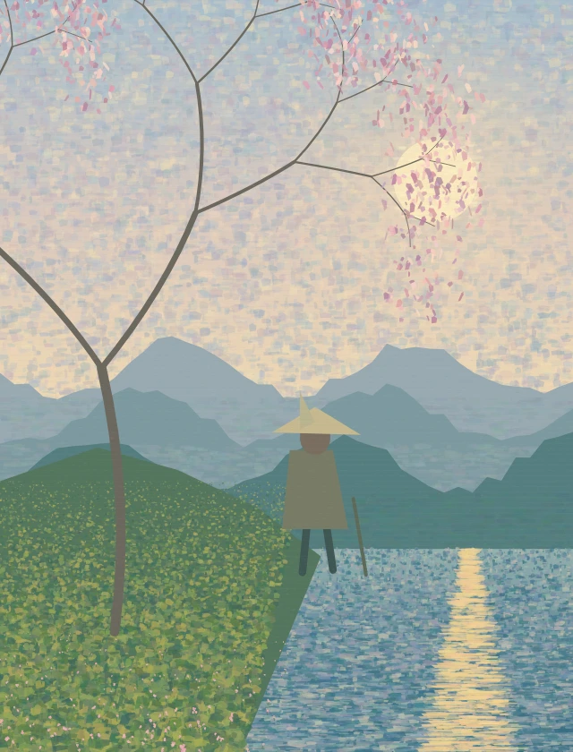
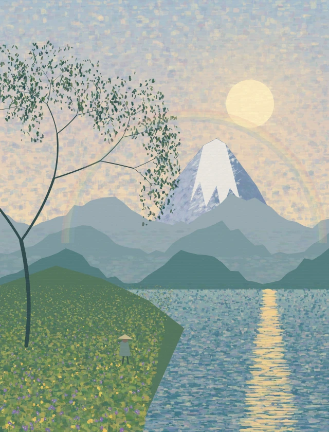
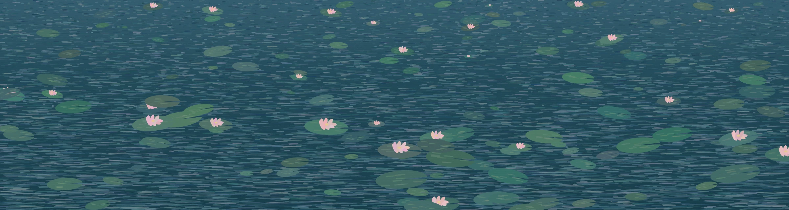

AKIRA KUROSAWA’S
DREAMS
Dreams of Nature, Memory, and Cinema
Eight dreamlike vignettes. A journey through a child’s wonder,
a painter’s eye, and a filmmaker’s soul.
夢は、まだ終わっていない。
A GARDEN BETWEEN WAKING & DREAMINGTHE CHAPTERS
Eight dreams. Eight worlds. A single human heart.

The Sunflower Field
A child’s encounter with a vanishing world.

The Peach Orchard
A place of serenity beyond time.

The Rainy Day
A meeting in the rain between the living and the lost.

The Tunnel
A passage to the other side of life and death.

The Crow
A warning from a world in turmoil.

Mount Fuji
A boy’s dream and a painter’s vision.

The Weeping Demon
Compassion beyond appearance.

After the Rain
A return to a more hopeful world.

THEMES
Timeless themes. Endless reflections.
Explore All ThemesNature
The beauty, fragility, and cycles of the natural world.
War
The scars of history and the cost of human conflict.
Childhood
Innocence, wonder, and the power of imagination.
Imagination
Dreams as a bridge between reality and the beyond.
Art
A dialogue with painting, memory, and the passage of time.